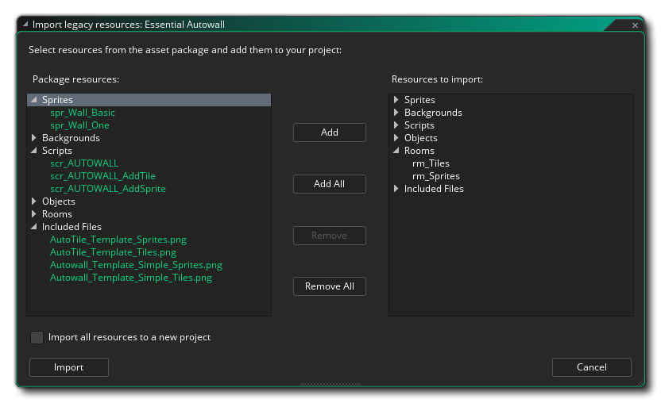

The Marketplace is the YoYo Games on-line market for buying and selling asset packages. An asset package can be just about anything related to GameMaker Studio 2, ie: sprites, scripts, shaders, or even full game engines or frameworks. To be able to create, buy and sell packages, you must first be registered on the Marketplace as a publisher and have signed in through GameMaker Studio 2 (this will be automatic when you log into the program) or from the main Marketplace web page. You can find full details of how to become a publisher from the YoYo Games knowledge base article Marketplace - Setting Up A Publisher Account.
In this window you can access your user account (and it's linked publisher accounts) from the top right of the page, and you can also browse and buy or download asset packages for use. You can find full information on how to buy and download an asset package from the YoYo Games Help Center article Marketplace - Purchasing An Asset Pack.
You can access the Marketplace easily from the drop down Marketplace menu at the top of the GameMaker Studio 2 IDE, and it gives you the option to open your Library of asset packages as well as create your own (assets or tutorials) and update any existing packages. These ideas are explained in more detail below:
The Library window shows you the packages that you have bought and gives you the option to download them and/or add them to your project.
On the left are the different category filters that you can use to see what you have in each one, and then in the middle you have the list of assets in your library. Each one can be selected so that you can see an overview of what it does (on the right) and they all have icons to view, download or install the asset package in a project. Note that you have two additional filters at the top of the main window where you can select to see only those assets that have been created specifically for GameMaker Studio 2, as well as a filter to show only those assets that you have already downloaded to your machine. You can also refresh the list of assets shown at any time by clicking on the Refresh button:
To add an asset package to your current project you must first download it by clicking on the Download button and when the download has completed, you can click on the Import button to add it to your project. Adding a package in this way will create an extension within your current project, and ask you to select from the different resources in the asset package to choose which ones you want to add (or you can import all of them). You can also select the option Import all resources to a new project, and instead of adding the assets to your current project, GameMaker Studio 2 will prompt you to give a new project name and save the asset within that project instead. Note that if you go directly to the Library from the Start Page, you will find most assets cannot be added individually, and instead you will be forced to use the Add All button. This is because you do not have a project to add the assets to and so GameMaker Studio 2 must create a new project for you to add all the assets in the package to (when you click the Import button, you will be prompted to save the new project with the name of your choice). 
With the assets added to your resource tree, you can now go ahead and use them in your game as you would those assets that you have created yourself. Please note, that assets downloaded from Marketplace are for individual use and cannot be shared to 3rd parties - although you can back them up and copy them to other locations for safety - unless the asset has a custom EULA that states the contrary.
NOTE: The people that create asset packages for the Marketplace work very hard to create a great resource for you to use, so please consider rating the assets you buy when you have tested them or if you use them. This encourages the developer and is also a useful guide for other users as to the quality of the assets available. You can easily rate your downloaded assets from the Library window.
When you select the Create Package option from the IDE menu you will be taken to the following workspace:
Here you must first select the Publisher identity that you want to publish the asset package as (which you should have set up from your Publisher Dashboard), then give a Display Name and a Version Number. A package ID will then be created for you based on the display name and publisher account used, but you can edit this to be something else if you wish as long as it maintains the reverse URL format. You then need to choose the type of asset package to make:
- Asset: This is a collection of assets (sprites, scripts, objects, etc...) that you wish o sell on the Marketplace
- Demo: This is a demo to demonstrate some concept or game idea
- Tutorial: The asset being uploaded is a tutorial, designed to be run from within the GameMaker Studio 2 IDE (see the section below for more details)
Once you have done that you can then choose which resources from the project you want to add into the Asset Package using the section on the right. You can add all your resources, or only some of them as well as remove any that you may have added by mistake. It is assumed that you have created the asset to be uploaded previously in GameMaker Studio 2 and that the current project contains all that you require to upload.
When you are happy with the selection of assets and want to upload your package to the Marketplace, simply click the Okay button at the bottom, and the asset package will be created and uploaded to the Marketplace. When the upload is complete, a new workspace will open with a browser view of the asset page for you to edit. For more information on how to set this page up, please see the section on Market Listing here: Listing An Asset.
REMEMBER! To be able to create or use asset packages, you must have previously created a user profile certificate. You can do this from the Marketplace Preferences, which is explained on this page.
Creating a tutorial is similar to creating a regular asset package, only now you have to add in specific included files as well as include an initial tutorial page (and an optional video page). The Tutorial workspace will look something like this:
As explained above, you need to select a publisher and then give your tutorial a name and a unique ID (reverse URL format), and then in the "type" dropdown select Tutorial. This will then give you additional options to add a base HTML file to start the tutorial from as well as an (optional) video file and URL. The video file should use the template supplied from the Marketplace - as should the rest of the tutorial - which you can get here, and when the user loads the tutorial, the video will be loaded into a separate frame within the IDE. Note that the pages you give for the start page and the video page are relative paths within the Included Files, and you can open an explorer to choose something other than the default ones that GameMaker Studio 2 populates the fields with.
Actually creating your tutorial will require you to add Included Files into your tutorial project, and these have to be added in a very specific way for the IDE to properly detect which files are to be used for the tutorial. The basic folder structure is shown in the image below:
So, we have two main folders:
- TutorialContent: All your tutorial HTML files, the CSS for styling them, and the images required for them (not the images required for resources, but the ones to be displayed within the tutorial), as well as the video template if required, go here. You can have sub-folders as well if you wish to split the tutorial into chapters, for example, but you should have at least one base HTML file to be used as the start page for the tutorial.
- TutorialResources: This folder has a further two sub-folders in it for Images and Sound resources. If your tutorial requires the user to add a sprite (for example) and you want to include it in the tutorial then you would place the image resource in the Images folder. These folders are imported into the tutorial project and when the user opens the sprite editor and goes to add an image, the default path for the explorer window will be to this location, making it easier for the user to find the necessary assets.
For your tutorial to work within the IDE you must have this folder structure as well as have a base HTML start page with a CSS file for styling. There are a number of special links that can be used within your tutorial projects which will skip to parts of a video, or open the manual on a specific section or function, and these are all given in the official Tutorial templates from the Marketplace.IMPORTANT! We strongly suggest that you download the Tutorial Templates from the Marketplace before attempting to create your own tutorials. They contain examples of all the important parts of the HTML as well as CSS and images to recreate buttons and menus within the tutorial, leaving you free to worry about the content rather than how to display it.
Once you have set up the included files and supplied the required information you can click Okay and the tutorial will be uploaded to the Marketplace, opening a workspace on the asset listing when finished so you can edit it and add icons, text, screenshots, etc... Once the tutorial asset has been published, users will be able to find it within the Tutorials section of the Start Page, where it can be downloaded and installed.
Updating tutorials works exactly the same way as creating an asset package, only you need to specify the package to update and can't set the package ID. You should be aware that the version number shown will be the current version number and should increment this as appropriate otherwise the update will fail (since you can't have two assets packages with the same version number).